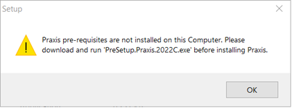
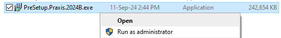
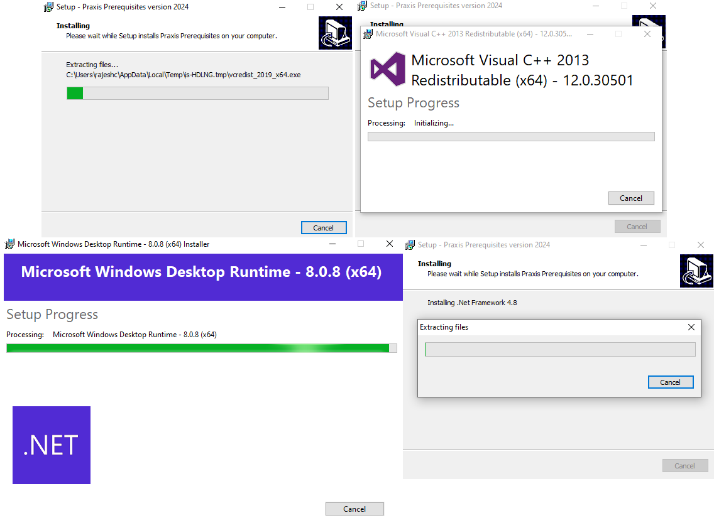

Förutsättningar
| JFY Plus-installationen visar nedanstående varningsmeddelande i början av installationen om JFY Plus-installationen körs utan att först köra Prerequisites. Installation av förutsättningar är nödvändig endast första gången i JFY Plus Server/Klient och kan ignoreras därefter. |

-
Kör PreSetup.JFY Plus.<Version>.exe för att installera alla förutsättningar som krävs för att köra JFY Plus-applikationen.
| Versionen är årtal med bokstavssuffix. |

-
Klicka på Install för att börja installationen.

-
Denna installation installerar alla inbyggda distribuerbara komponenter, .Net Frameworks och andra drivrutiner som används av JFY Plus.

-
Klicka på Finish för att slutföra installationen och starta om datorn.